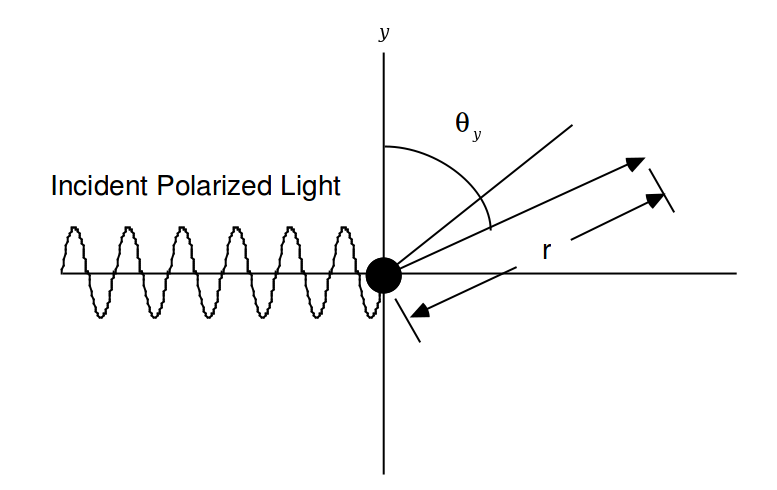
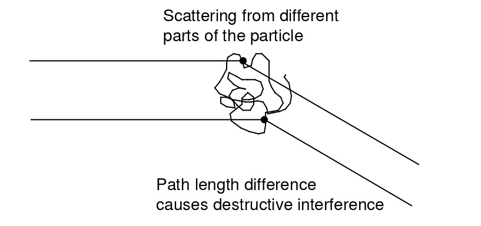

Técnica de Espalhamento de Luz Estático
Para determinação da massa molecular
Lucas Simões, Paulo Roberto e Rodrigo Orselli
- Espalhamento é a irradiação em todas as direções por um dipolo induzido devido a uma onda eletromagnética incidente
- Relacionado a fenômenos como visão e cor do céu
- Permite a determinação de $\overline{M}_w$, $R_g$ e $A_2$ em soluções poliméricas
Espalhamento em partículas pequenas
Teoria desenvolvida por Rayleigh
Aplica-se a partículas com $R_g$ pequeno em comparação ao comprimento de onda incidente

Luz é um campo eletro-magnético e, na origem, pode ser descrito como:
\[E_y = E_0 cos(\frac{2 \pi \overline{c} t}{\lambda})\]
O momento dipolar induzido por uma onda eletromagnética polarizada segundo o eixo y será dado por:
\[ p = \alpha_p E_y \]
\[ = \alpha_p E_0 cos \left( \frac{2 \pi \overline{c} t}{\lambda} \right) \]
O dipolo induzido irá espalhar luz para todas as direções
O campo espalhado $E_s$:
- Dependerá do ângulo $\theta_y$
- Será inversamente proporcional à distância $r$
- Será proporcional à aceleração da carga pelo momento dipolar ($\frac{d^2p}{dt^2}$)
O campo da luz espalhada no ângulo $\theta_y$ será:
\[ E_s = - \alpha_p E_{0} \frac{4 \pi^2}{r \lambda^2} sen(\theta_y) cos \left( \frac{2 \pi \overline{c} t}{\lambda} \right) \]
O equipamento usado normalmente mede a intesidade de luz espalhada $I$, onde $I = E^2$
\[ I_s = \alpha_p^2 I_{0y} \frac{16 \pi^4}{r^2 \lambda^4} sen^2(\theta_y) \]
Como normalmente a luz incidente não é polarizada utiliza-se a seguinte equação:
\[ I_s = \frac12 I_{sy} + \frac12 I_{sz} \]
\[= \alpha_p^2 I_{0} \frac{8 \pi^4}{r^2 \lambda^4} ( sen^2(\theta_y) + sen^2(\theta_z))\]
Assim, para $n$ moles de partículas pequenas em uma solução diluída de volume $V$, teremos:
\[ i^0_{\theta} = \frac{I_0 n N_A}{V} \alpha_p^2 I_{0} \frac{8 \pi^4}{r^2 \lambda^4} (1 + cos^2\theta) \]
Aqui, $i^0_\theta$ denota a intensidade de luz espalhada por partículas pequenas a um ângulo $\theta$ do eixo $x$
Soluções Poliméricas Ideais com Partículas Pequenas
Já obtivemos a intesidade de luz medida $i_\theta^0$, mas ainda precisamos conectar isso com a massa molecular $M$
Essa conexão está no índice de polarizabilidade $\alpha_p$, que depende da massa molecular:
\[\alpha_p = \frac{n_0M}{2 \pi L} \frac{dn_0}{dc}\]
Substituindo $\alpha_p$ na equação da intesidade, e substituindo $(\frac{n}{V})$ por $(\frac{c}{M})$, podemos definir a razão de Rayleigh:
\[ R_\theta^0 := \frac{r^2 i_\theta^0}{I_0} = \frac{2 \pi^2}{\lambda^4} \frac{n_0^2}{L} (\frac{dn_0}{dc})^2 M c (1 + cos^2\theta)\]
\[ \therefore R_\theta^0 = KMc\]
Para uma solução polimérica polidispersa, a razão de Rayleigh pode ser escrita como:
\[R_\theta^0 = K \sum_i M_i c_i\]
Portanto:
\[\frac{R_\theta^0}{Kc} = \frac{\sum_i M_i c_i}{\sum_i c_i} = \frac{\sum_i N_i M_i^2}{\sum_i N_i M_i} = \overline{M_W} \]
Situações não-ideais
- Solução não-ideal
- Partículas grandes
Soluções Poliméricas Não-Ideais
Assim como é feito com a pressão osmótica, o modo de lidar com soluções não-ideais é adicionando coeficientes viriais da seguinte forma:
\[ \frac{Kc}{R_\theta^0} = \frac{1}{\overline{M_W}} + 2A_2c + 3A_3c^2 + ... \]
Pela termodinâmica de flutuações, temos:
\[\frac{Kc}{R_\theta^0} = \frac{1}{RT}\frac{\partial \pi}{\partial c}\]
A expansão virial da pressão osmótica nos dá:
\[\pi = \frac{RT}{\overline{M_N}}c + RTA_2c^2 + RTA_3c^3 + ...\]
Substituindo uma equação na outra, temos a equação desejada para $\frac{Kc}{R_\theta^0}$.
$A_2$ possui o mesmo significado que na expansão da pressão osmótica, ou seja, nos dá informações sobre a qualidade do solvente.
$\frac{Kc}{R_\theta^0}$ como função linear de $c$
\[\frac{Kc}{R_\theta^0} = \frac{1}{\overline{M_W}} + 2A_2c\]
Soluções Poliméricas Não-Ideais com Partículas Grandes

A interferência vem da diferença Da distancia percorrida pela luz, que depende de $\theta$.
Em $(\theta = 0)$ temos apenas luz transmitida e não há interferência
Em $(\theta = \pi)$ a interferência é máxima
\[ P(\theta) := \frac{i_\theta^0}{i_\theta} = \frac{R_\theta}{R_\theta^0} \]
Referências Bibliográficas